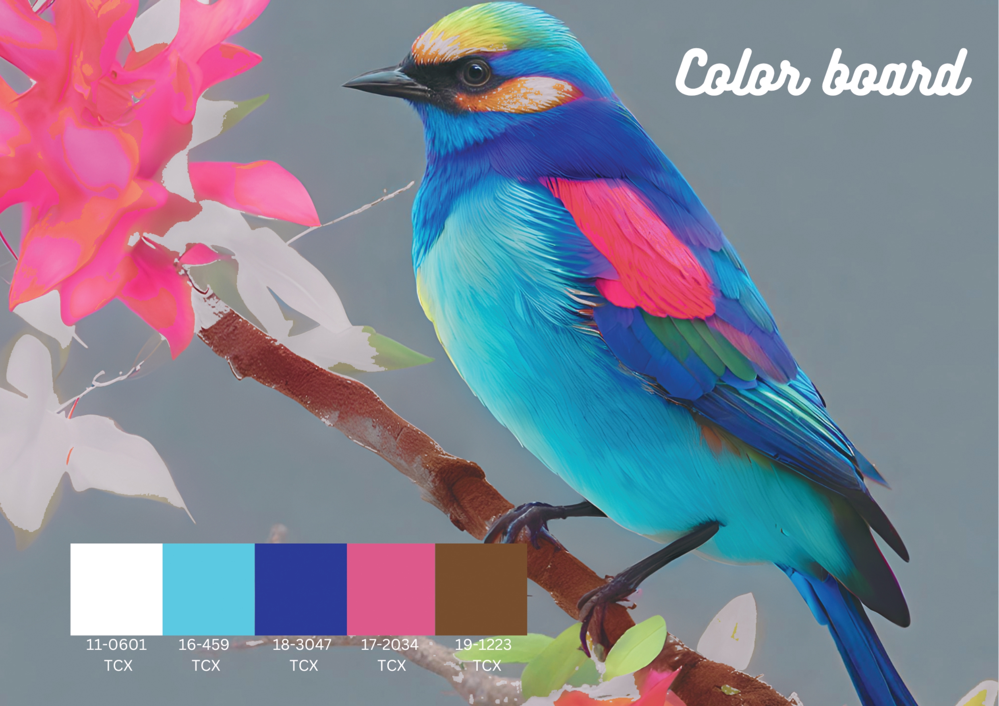
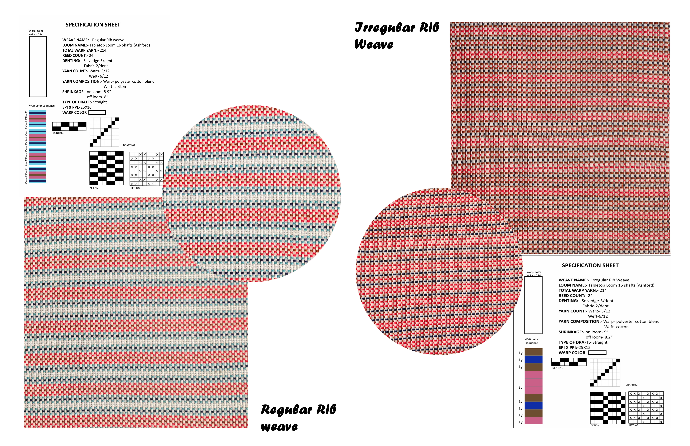
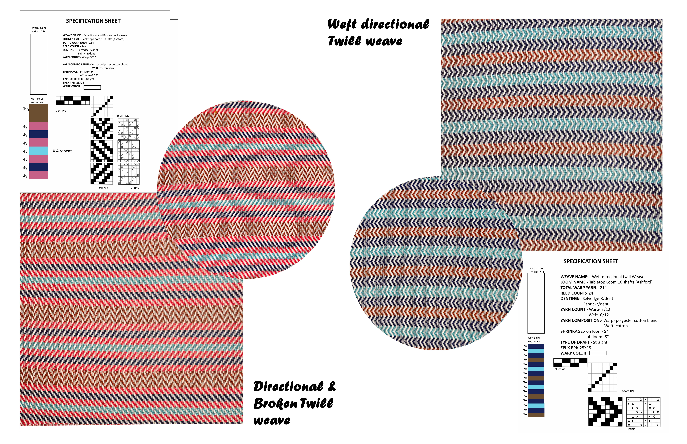
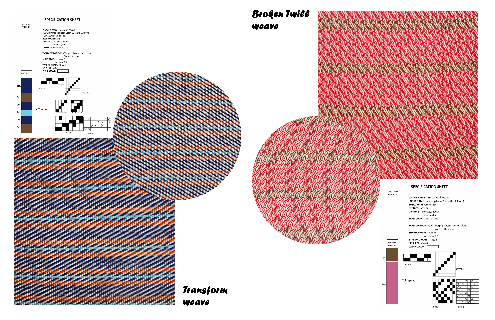
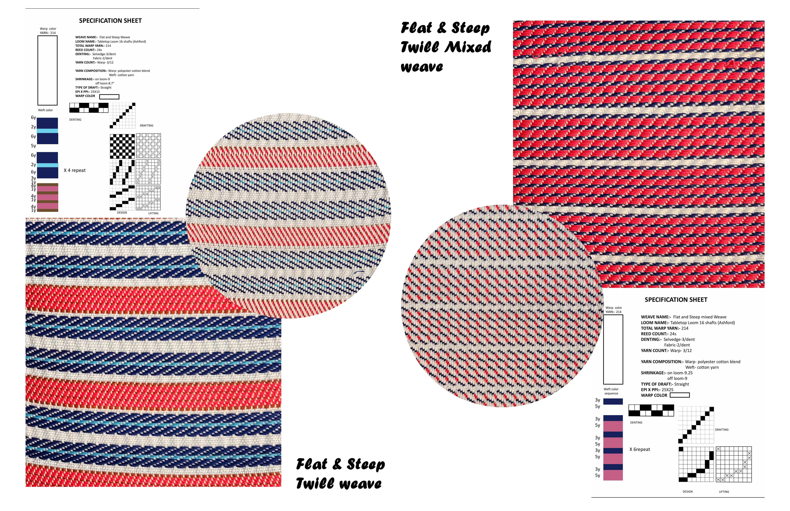
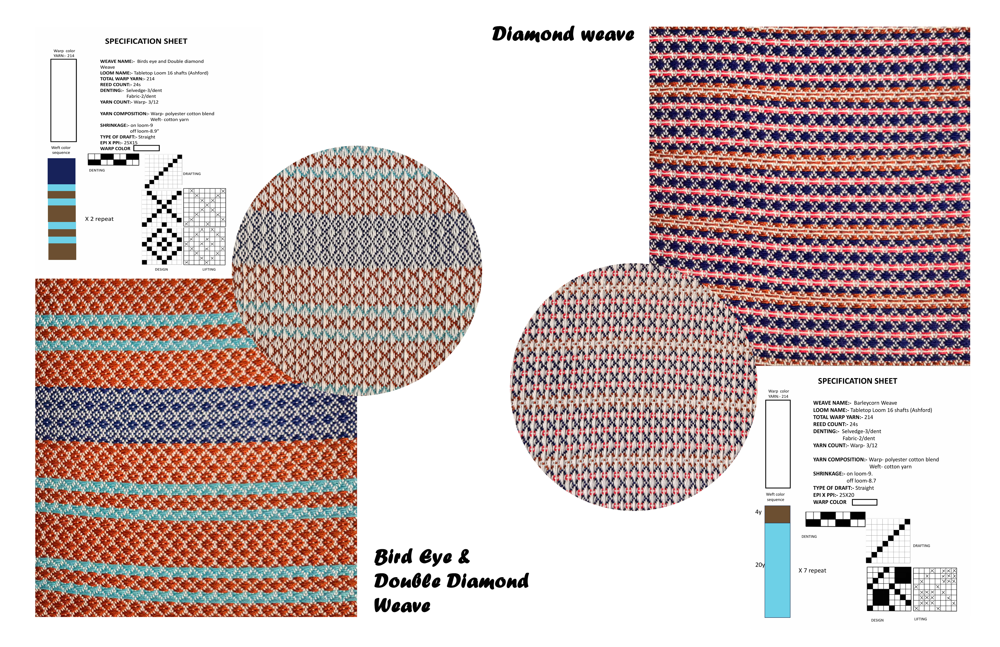
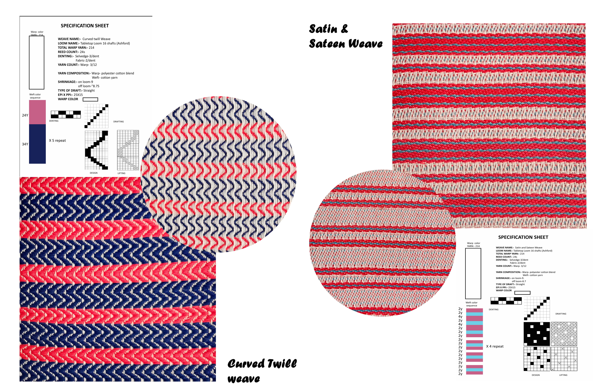
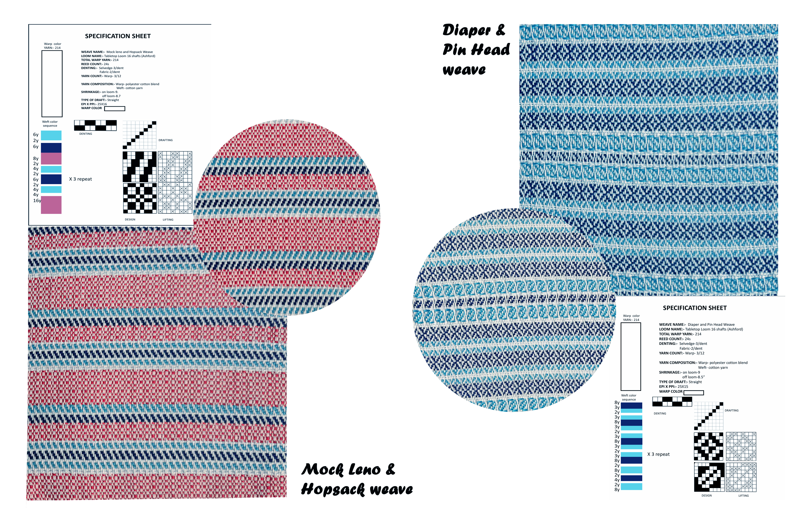
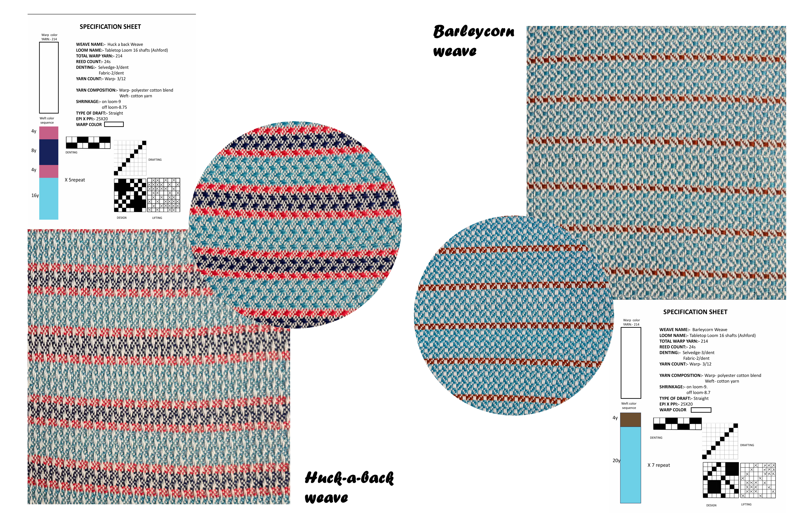

Woven PlungeBased on a vibrant bird-inspired color palette, Woven Plunge explores the versatility of basic weave structures. Each design from ribs and twills to satins and diamonds translates the palette’s lively harmony into textured woven expressions, merging color study with fundamental weave exploration.








